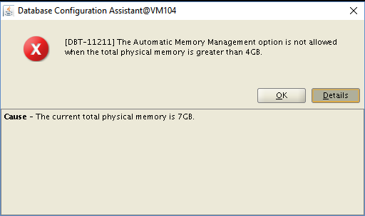
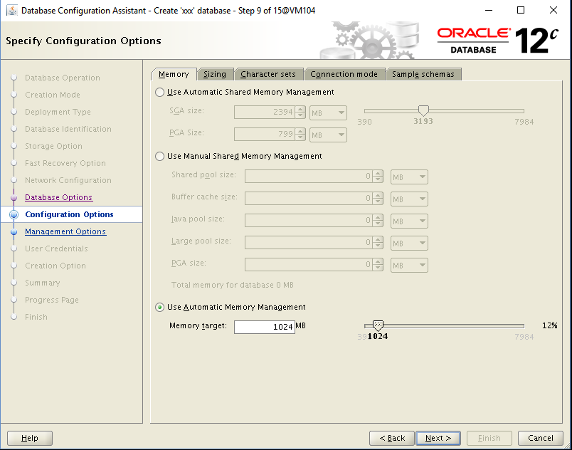

This was first published on https://www.dbi-services.com/blog/12cr2-dbca-automatic-memory-management-and-databasetype/ (2017-04-03)
Republishing here for new followers. The content is related to the versions available at the publication date.
.
This post explains the following error encountered when creating a 12.2 database with DBCA:
[DBT-11211] The Automatic Memory Management option is not allowed when the total physical memory is greater than 4GB.or when creating the database directly with the installer:
[INS-35178]The Automatic Memory Management option is not allowed when the total physical memory is greater than 4GB.If you used Automatic Memory Management (AMM) you will have to think differently and size the SGA and PGA separately.
Automatic Shared Memory Management, or ASMM is what you do when setting SGA_TARGET and not setting MEMORY_TARGET. Basically, you define the size of the SGA you want to allocate at startup and that will be available for the instance, most of it being buffer cache and shared pool. I’ll not go into the detail of SGA_TARGET and SGA_MAX_SIZE because on the most common platforms, all is allocated at instance startup. Then, in addition to this shared area used by all instance processes, each processes can allocate private memory, and you control this with PGA_AGGREGATE_TARGET.
The total size of SGA and PGA for all instances in a system must reside in physical memory for the simple reason that they are mostly used to avoid I/O (a large buffer cache avoids physical reads and optimizes physical writes, a large PGA avoids reads and writes to tempfiles).
Because you don’t always know how much to allocate to each (SGA and PGA) Oracle came with a feature where you define the whole MEMORY_TARGET, part of this will be dynamically allocated to SGA or PGA. This is called Automatic Memory Management (AMM). It’s a good idea on the paper: it is automatic, which means that you don’t have to think about it, and it is dynamic, which means that you don’t waste physical memory because of bad sizing.
But it is actually a bad idea when going to implementation, at least on the most common platforms.
SGA and PGA are different beasts that should not be put in the same cage:
First, it is not so easy because you have to size the /dev/shm correctly or you will get the following at startup:
ORA-00845: MEMORY_TARGET not supported on this systemIn addition to that, because the whole memory is prepared to contain the whole SGA you see misleading numbers in ‘show sga’.
Second there are lot of bugs, resizing overhead, etc.
And finally, you cannot use large pages when you are in AMM, and in modern system (lot of RAM, lot of processes) having all processes mapping the SGA with small pages of 4k is a big overhead.
So, as long as you have more than few GB on a system, you should avoid AMM and set SGA_TARGET and PGA_AGGREGATE_TARGET independently. Forget MEMORY_TARGET. Forget /dev/shm. Forget also the following documentation at http://docs.oracle.com/database/122/ADMIN/managing-memory.htm#ADMIN00207 which mentions that Oracle recommends that you enable the method known as automatic memory management. 
Actually, AMM is not recommended for systems with more than a few GB of physical memory, and most system have more than few GB of physical memory. If you try to use AMM on a system with more than 4GB you get a warning in 12cR1 and it is an error in 12cR2:
I got this when trying to create a database with AMM on a system with more than 4GB of physical memory.

This does not depend on the size of MEMORY_TARGET you choose, or the size of /dev/shm, but only the size of available physical memory:
[oracle@VM104 ~]$ df -h /dev/shm
Filesystem Size Used Avail Use% Mounted on
tmpfs 3.9G 0 3.9G 0% /dev/shm
[oracle@VM104 ~]$ free -h
total used free shared buff/cache available
Mem: 7.8G 755M 5.0G 776M 2.1G 6.2G
Swap: 411M 0B 411M
If you are not convinced, then please have a look at MOS Doc ID 2244817.1 which explains this decision:
So, do you want to create a database which may not be functional after some times?
Then, if you were thinking that AMM was cool, your next question not is: what size to allocate to SGA and PGA?
Don’t panic.
You are in this situation because you have several GB of RAM. Current servers have lot of memory. You don’t have to size it to the near 100MB. Start with some values, run with it. Look at the performance and the memory advisors. Are you doing too much physical I/O on tables where you expect data to be in cache? Then increase the SGA, and maybe set a minimum for the buffer cache. Do you see lot of hard parse because your application runs lot of statements and procedures? Then increase the SGA and maybe set a minimum for the shared pool. Do you run lot of analytic queries that full scan tables and have to hash and sort huge amount of data? Then decrease the SGA and increase the PGA_AGGREGATE_TARGET.
Where to start?
If you don’t know where to start, look at the DBCA database types:
#-----------------------------------------------------------------------------
# Name : databaseType
# Datatype : String
# Description : used for memory distribution when memoryPercentage specified
# Valid values : MULTIPURPOSE|DATA_WAREHOUSING|OLTP
# Default value : MULTIPURPOSE
# Mandatory : NO
#-----------------------------------------------------------------------------Those types define the ratio between SGA and PGA. Then why not start with what is recommended by Oracle?
I’ve created the 3 types of instances with the following:
dbca -silent -totalMemory 10000 -databaseType MULTIPURPOSE -generateScripts -scriptDest /tmp/MULT ...
dbca -silent -totalMemory 10000 -databaseType DATA_WAREHOUSING -generateScripts -scriptDest /tmp/DWHG ...
dbca -silent -totalMemory 10000 -databaseType OLTP -generateScripts -scriptDest /tmp/OLTP ...And here are the settings generated by DBCA
$ grep target /tmp/*/init.ora
DWHG/init.ora:sga_target=6000m
DWHG/init.ora:pga_aggregate_target=4000m
MULT/init.ora:sga_target=7500m
MMULT/init.ora:pga_aggregate_target=2500m
OLTP/init.ora:sga_target=8000m
OLTP/init.ora:pga_aggregate_target=2000mHere is the summary:
| SGA | PGA | |
|---|---|---|
| OLTP | 80% | 20% |
| Multi-Purpose | 75% | 25% |
| Data Warehousing | 60% | 40% |
(percentages are relative to eachother, here. Donc’ use 100% of physical memory for the Oracle instances because the system needs some memory as well)
This gives an idea where to start. Servers have lot of memory but you don’t have to use all of it. If you have a doubt, leave some free memory to be available for the filesystem cache. Usually, we recommend to used direct i/o (filesystemio_options=setall) to avoid the filesystem overhead. But when you start and want to lower the risks sub-sizing SGA or PGA, then you may prefer to keep that second level of cache (filesystemio_options=async) which uses all the physical memory available. This may improve the reads from tempfiles in case your PGA is too small. This is just an idea, not a recommendation.
If you have a server with more than few GB, then set SGA and PGA separately. Start with the ratios above, and then monitor performance and advisors. Physical servers today have at least 32GB. Even with a small VM with 1GB for my labs, I prefer to set them separately, because in that case I want to be sure to have a minimum size for buffer cache and shared pool. You may have lot of small VMs with 3GB and think about setting MEMORY_TARGET. But using large pages is a recommendation here because the hypervisor will have lot of memory to map, so ASMM is still the recommandation.
Once you know the size of all SGA, look at Hugepagesize in /proc/meminfo, set the number of hugepages in /etc/sysctl.conf, run sysctl -p and your instances will use available large pages for the SGA.
{kind=link}
{kind=link}